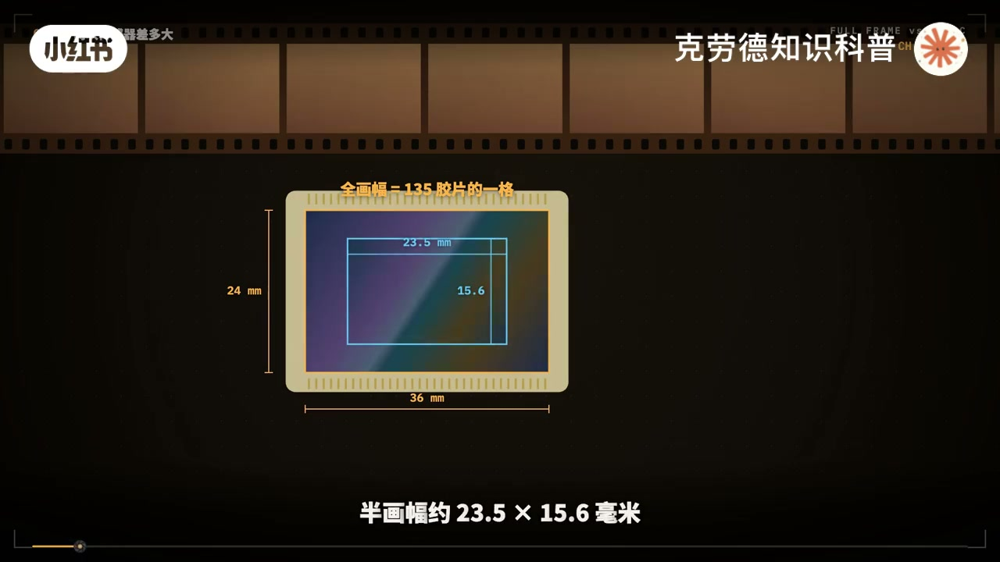
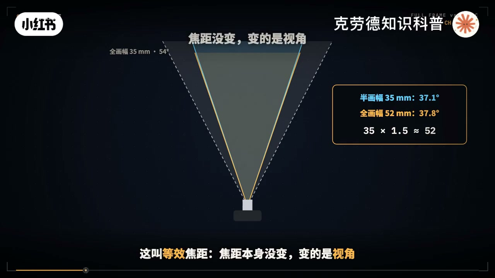
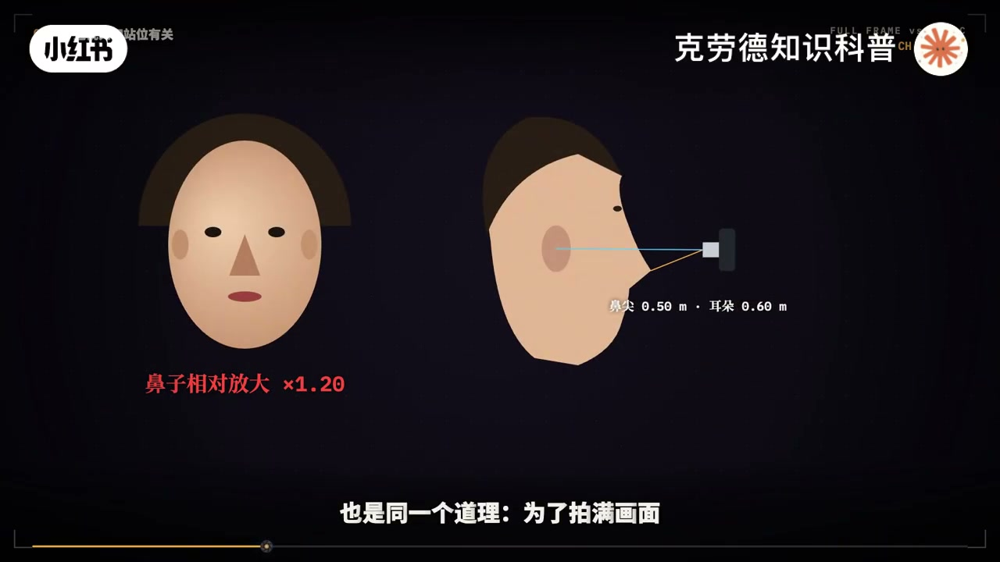
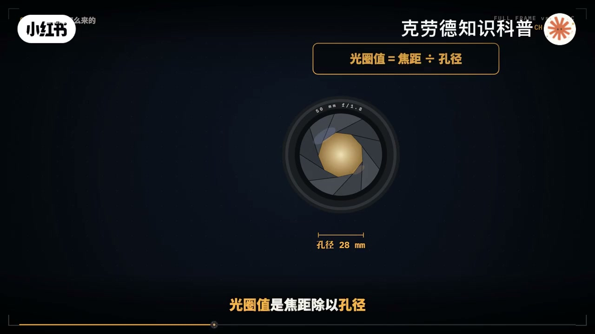
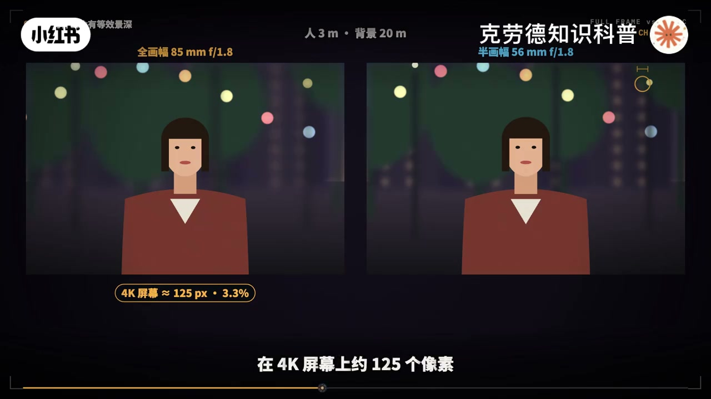
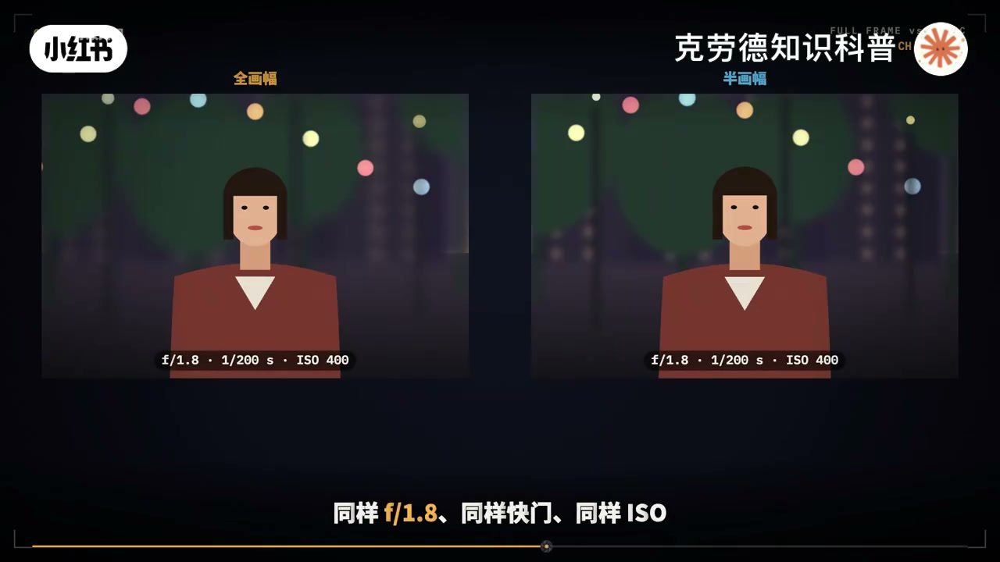
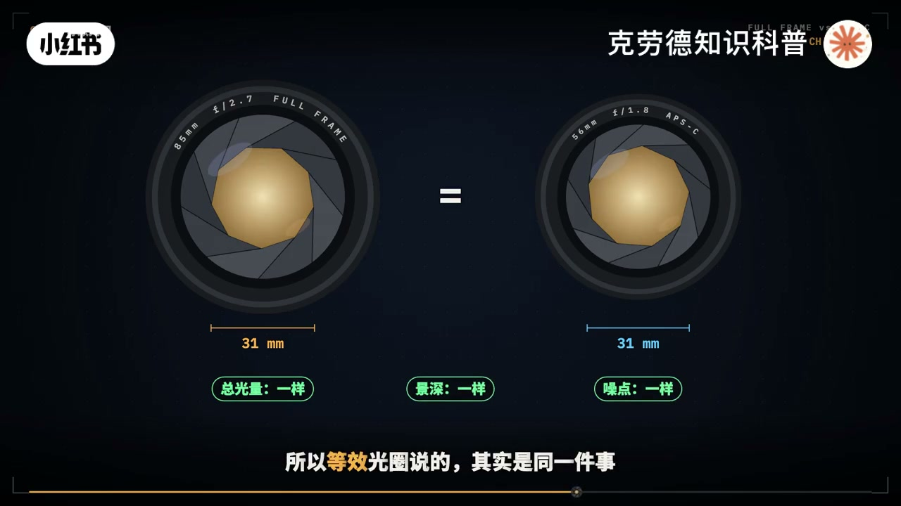
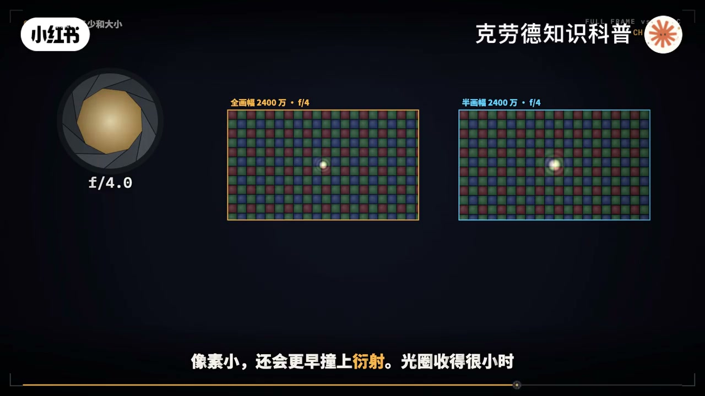
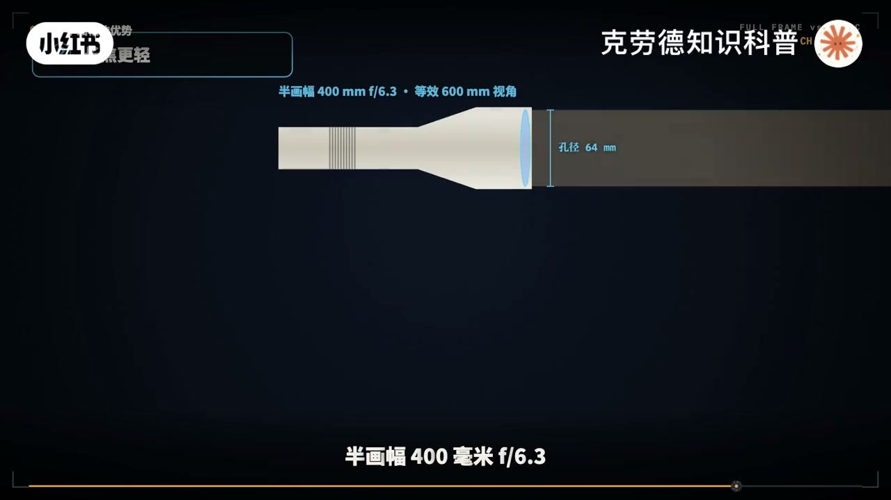
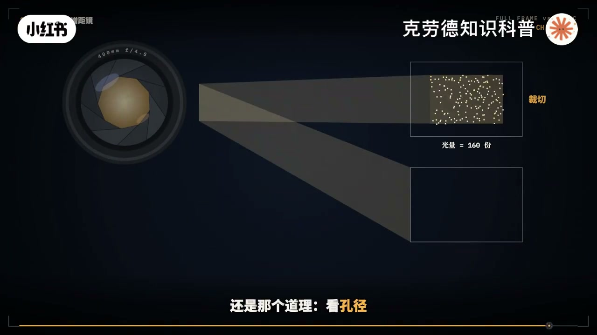

内容要点
「半画幅全画幅到底等效了什么？哪个好？」教程要点：同一支镜头装在全画幅和半画幅机身上 → 焦距没变 光圈没变 透视也没变 → 真正变了的 只有一件事 → 传感器有多大；详见正文。
知识结构
同一支镜头装在全画幅和半画幅机身上
越远越虚
等效光圈说的
- 同一支镜头装在全画幅和半画幅机身上
- 焦距没变 光圈没变 透视也没变
- 真正变了的 只有一件事
- 传感器有多大
- 可就这一件事
同一支镜头装在全画幅和半画幅机身上
00:00–04:04同一支镜头装在全画幅和半画幅机身上
同一支镜头装在全画幅和半画幅机身上；焦距没变 光圈没变 透视也没变；真正变了的 只有一件事；传感器有多大；可就这一件事；让等效焦距 等效光圈 等效景深；吵了很多年；半画幅的F1.8到底是F1.8还是F2.7；这七视频不推公示；每一个为什么都用动画拆开给你看；看完你就能自己判断；什么时候该用全画幅；什么时候半画幅反而更好；全画幅传感器36x24毫米；和当年135胶卷的一格一样大；所以叫全画幅；半画幅约23.5x15.6毫米；长和宽都只有全画幅的2%左右；长宽各差1.5倍；面积就差1.5x1.5；约2.3倍；一块全画幅能铺下两块多半画幅；这个1.5叫裁切细数；佳能的半画幅再小一点；细数是1.6；顺便看看其他尺寸；手机主摄的DDR4；顺便看看其他尺寸；手机主摄的传感器；大多只有指甲盖大小；比全画幅更大的较中画幅；细数约0.8；同样的道理；从小到大一路试用；记住两个数；边长1.5倍；面积2.3倍；后面所有的等效；都是从这两个数推出来的；和边长有关的；比如视角；景深差1.5倍；和面积有关的；比如总镜光亮差2.3倍；焦距是镜头本身的光学属性；刻在镜头上；装在哪台机身上；都不会变；镜头把景物；投成一个圆形的像；叫相场；传感器放在这个圆里；只记录自己盖住的那一块；换成半画幅；镜头投出的像异母一样；只是传感器小了；四周一圈没被记下来；把剩下的部分；放大到同样尺寸看；就像用更长的镜头拍的；所以；35毫米镜头；装在半画幅上；视角相当于全画幅；52毫米左右；这叫等效焦距；焦距本身没变；变的是视角；也正因为相场有大有小；装为半画幅设计的镜头；相场只要盖住小传感器就够了；可以做得更小更轻；装到全画幅机身上；四周会出现黑角；相机只能自动裁成半画幅用；反过来；全画幅镜头装在半画幅上；只用了相场最中间；最锐利的那一块；代价也在这里；半画幅想拍的；和全画幅一样广；就得用更短的镜头；全画幅14毫米的超广角；半画幅要9毫米多才能对上；这么短的镜头；又要画质好；很难做；选择也少得多；很多人说长焦能压缩空间；半画幅压缩感更强；广角会把人拍变形；其实这些都是透视；而透视只有一件事决定；相机离背射物多远；站在同一个位置；用24毫米拍一张；再用70毫米拍一张；把广角那张中间；剪出来放大；和70毫米那张一模一样；人和山的大小比例完全没变；焦距只决定矿多大；不改变透视；为什么离远了就压缩；假设人离你两米；山离你200米；山比人远100倍；你往后退到20米；山就变成218米；只比人远10来倍；远近只比变小了；山在画面里；就显得更大；更贴近人；广角拍人像脸变大；鼻子变大；也是同一个道理；为了拍满画面；你离鼻尖只有半米；耳朵却在60厘米外；鼻子就被放大了两成；退到2米；两者只差5%；脸就正常了；镜头没有拉伸；是你站得太近；放到全画幅和半画幅上也一样；为了框住同样的画面；不改变透视；往后站；透视才改变；要弄懂等效景深；先得知道；虚化是怎么来的；景物上的每一个点；都会向四面八方发光；镜头前面那个通光孔；接住了其中一束锥形的光；再把它重新汇聚到一个点上；如果这个点正好汇聚在传感器上；它就是清晰的一个点；这就是合焦；背景比人远；它的光汇聚得早；在传感器前面就交叉了；等光到达传感器时；已经重新散开成一个圆斑；这个圆斑；就是我们看到的虚化光斑；光斑多大；看光锥有多粗；通光孔越大；接住的光锥越粗；散开后的圆斑就越大；背景越虚；所以；开大光圈；背景就更虚；除了孔的大小；还有两件事；一是你离主体多近；越近越虚；二是背景离主体多远



04:03–07:53越远越虚
越远越虚；这两件事；决定了光锥在传感器前；交叉得有多早；这里有个关键；决定虚化的是通光孔的实际直径；而不是光圈值；光圈值是交距除以孔径；50毫米F1.8；孔径约28毫米；同样是F1.8；100毫米镜头的孔径约56毫米；光圈值一样；孔的实际大小；可以差得很多；什么算清楚；也是相对的；照片最后；都放大到同一个屏幕上看；传感器上一个小圆斑；只要放大后；还小到看不出来；我们就觉得；它是清楚的；传感器越小；放大的越多；同样大的圆斑；就越容易被看出来；现在把两台相机；放到同一个位置；拍同一个人；构图要一模一样；全画幅用85毫米原相镜头；半画幅传感器小1.5倍；要框住同样的画面；就得用56毫米左右；两支镜头都开F1.8；可光圈值是交距除以孔径；85毫米F1.8；孔径约47毫米；56毫米F1.8；孔径只有约31毫米；为了同样的构图；换了更短的交距；同样的光圈值；恐就小了1.5倍；从小接触的光追就细；我们把背景里；同一盏路灯的光录画出来；全画幅那边光追粗；在传感器上散成大圆斑；半画幅这边光追细；圆斑就小了；再把两张照片；放到同一块屏幕上；以人在3米；背景在20米为例；全画幅的背景光斑约；占画面宽度的3.3%；在4K屏幕上；约125个像素；半画幅只占2.1%；约82个像素；虚化程度差的正好是那1.5倍；景深也一样；同样这张人像；全画幅85毫米F1.8；清楚的范围；前后加起来约13厘米；鼻尖清楚；耳朵就开始虚了；半画幅56毫米F1.8；清楚范围约21厘米；脸前后基本都清楚；那半画幅想要；和全画幅一样的虚化；怎么办；要么开到F1.2；孔就和全画幅的一样大；要么反过来；全画幅收到F2.7；孔缩到31毫米；两台相机拍出来的景深；就一模一样了；这就是等效光圈F2.7；真正的含义；它说的是孔径；说的是景深和虚化；另一种情况；半画幅不换镜头；直接往后退；让同一只85毫米；框住同样的人；孔径没变；但你离人远了1.5倍；光追交叉得更晚；虚化同样会变弱；而且透视也跟着变了；所以无论哪种办法；只要构图一样；半画幅的虚化；多若1.5倍；景深深也有好处；拍微距；虫子从头到尾；更容易都清楚；拍风景；拍视频跟焦；视焦的风险都更小；同样的景深；半画幅可以少收一档多光圈；快门就能快一倍多；那亮度呢；同样F1.8；同样快门；同样ISO；全画幅和半画幅；拍出来的照片一样亮；为什么光圈值能统一曝光；因为焦距越长；像被放得越大；同样的光要摊到更大的面积上；相就变暗；而光圈值；是焦距除以孔径；焦距长了；同也暗比例变大；多接的光正好补回来；所以只要光圈值一样；传感器上每一小块面积；接到的光就一样多；可是全画幅的传感器面积；大了2.3倍；我们把光想成下雨；每一格接到的雨一样多；但全画幅这片填大了2.3倍；整张照片一共接住的光；全画幅就多了2.3倍；光多有什么用；光是一粒一粒的光子；落到哪里是随机的；有的地方多几粒；有的地方少几粒；这种起伏就是噪点；光子越多；起伏站的比例就越小；画面就越干净；两张照片放到同一个屏幕上看；全画幅多收了2.3倍的光；噪点少了大约1.2档；换成你熟悉的说法；全画幅ISO 6400的干净程度；半画幅大约要在ISO 2700左右；才能做到；有意思的是；回到刚才那个人像；全画幅85毫米收到F2.7；孔径和半画幅56毫米F1.8一样大；两只镜头收进来的总光量；也就一样多；同样的快门下；两张照片的景深和噪点；很几乎一样；所以



07:51–12:05等效光圈说的
等效光圈说的；其实是同一件事；孔径一样大；收的光就一样多；景深也一样深；记住一句话；曝光参数照常用镜头上的F1.8；景深；虚化和噪点按F2.7去比较；像素是传感器上的感光小格子；同样2400万像素；全画幅每个格子约5.9微米宽；半画幅只有约3.9微米；面积小了一半多；单个格子越小；接到的光越少；单独放大看一个像素；噪点更明显；但照片不是一个像素一个像素看的；缩到同样大小时；很多小格子会合在一起看；整张照片的噪点；主要还是看传感器的总面积；全画幅高像素机身；裁成半画幅；就等于一台半画幅相机；比如索尼A725是6100万像素；像素间距3.76微米；半画幅的A6700是2600万像素；间距也是3.76微米；A725切到半画幅模式；正好也是约2600万像素；像素越密；对镜头的要求越高；同样2400万像素；半画幅要在小1.5倍的面积上；分辨出同样多的细节；镜头每毫米要分辨的线条；就多1.5倍；镜头跟不上；像素再多；也是糊的；像素小；还会更早装上眼射；光圈收得很小时；光穿过小孔；会散开成一个模糊的光点；光圈越小；光点越大；放到同样大小的照片上看；全画幅F16的眼射模糊；半画幅在F11左右就到了；所以拍风景时；半画幅不必；也不该把光圈收得太小；把前面的串起来；全画幅的优势就很清楚了；第一 收光多；同样画面和快门；噪点少约1.2磅；暗光 高感更从容；第二 宽容度更高；传感器总面积大；能装下的光更多；亮部更不容易溢出；暗部也能拉得更干净；同一代技术下；通常多出接近密码；第三 前景深更容易；同样的视角和光圈；孔径大1.5倍；人像 产品；更容易把背景虚掉；第四 超广角和高像素更好做；超广角镜头选择多；要对到六七千万像素；全画幅可以不把像素做得太小；对镜头也没那么苛刻；半画幅的优势；同样实在；第一 小 轻 便宜；传感器小；镜头要覆盖的像场也小；机身和中短焦镜头；都能做得更小；价格也更低；第二 长焦更轻；半画幅400毫米；视角相当于全画幅600毫米；但长焦镜头的个头；主要由前面那块玻璃的口径决定；半画幅400毫米；F6.3；孔径约63毫米；全画幅600毫米；F6.3；孔径约95毫米；镜头轻；是因为口径小；代价也一样；收的光少；第三 景深更深；微距 风景 视频跟焦；同样光圈下；更容易全画面清楚；可以少收光圈；多换快门；第四 像素密度高的半画幅；拍远处的小鸟；能把更多像素放到鸟身上；和全画幅裁切比；关键看像素间距；间距一样就没有区别；半画幅的像素更密；细节就更多；最后说一个常见的选择；鸟太远；是把全画幅裁成半画幅；还是加一个1.4倍增距镜；两种做法的视角差不多；结果却不一样；裁切 镜头光圈不变；对焦也不受影响；但只用了传感器中间一块；以尼康Z8为例；4570万像素裁完；鸟所在的画面；只剩约1940万像素；增距镜把像放大1.4倍；铺满整块传感器；4570万像素全用上了；鸟身上的像素多了一倍以上；代价是光圈小一档；400毫米F4.5；变成560毫米F6.3；快门或ISO要补一档；有意思的是；增距镜并没有让鸟收到的光变少；还是那个道理；看孔镜；400毫米F4.5的孔镜；约89毫米；加了增距镜变成560毫米F6.3；孔镜还是89毫米；鸟反射进来的光一样多；只是摊到了更多像素上；所以放到同样大小看；两者噪点差不多；增距镜胜；再细节更多；但增距镜不是白给的；它多了几天镜片；画质会掉一点；对焦也会变慢；暗光下更明显；镜头本身越锐；光线越好；增距镜越直；镜头一般；光线差；摇动的快；直接裁切更




口述/画面要点（40段）
结合 Whisper medium 与画面大字整理；专有名词已校对。
同一支镜头装在全画幅和半画幅机身上
焦距没变 光圈没变 透视也没变
真正变了的 只有一件事
传感器有多大
可就这一件事
让等效焦距 等效光圈 等效景深
吵了很多年
半画幅的F1.8到底是F1.8还是F2.7
这七视频不推公示
每一个为什么都用动画拆开给你看
看完你就能自己判断
什么时候该用全画幅
什么时候半画幅反而更好
全画幅传感器36x24毫米
和当年135胶卷的一格一样大
所以叫全画幅
半画幅约23.5x15.6毫米
长和宽都只有全画幅的2%左右
长宽各差1.5倍
面积就差1.5x1.5
约2.3倍
一块全画幅能铺下两块多半画幅
这个1.5叫裁切细数
佳能的半画幅再小一点
细数是1.6
顺便看看其他尺寸
手机主摄的DDR4
顺便看看其他尺寸
手机主摄的传感器
大多只有指甲盖大小
比全画幅更大的较中画幅
细数约0.8
同样的道理
从小到大一路试用
记住两个数
边长1.5倍
面积2.3倍
后面所有的等效
都是从这两个数推出来的
和边长有关的